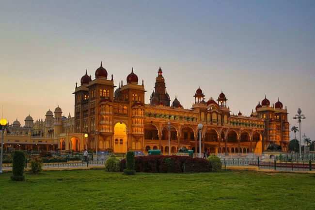
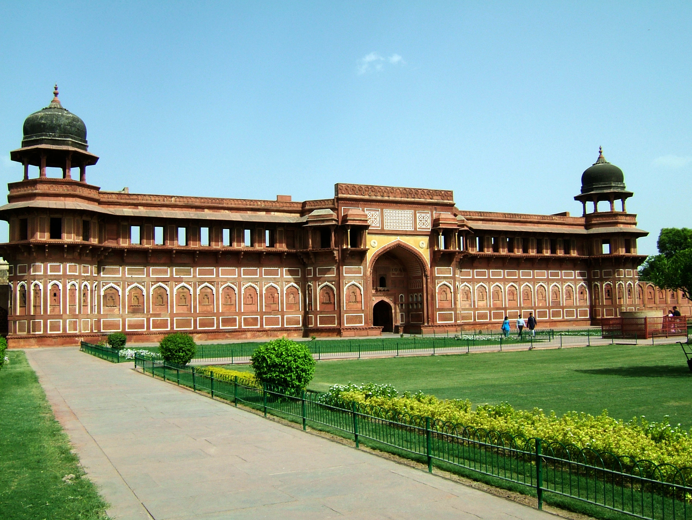
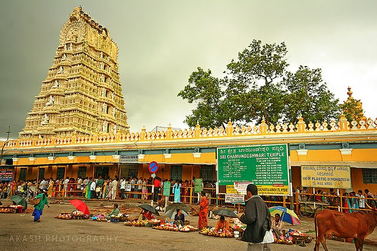
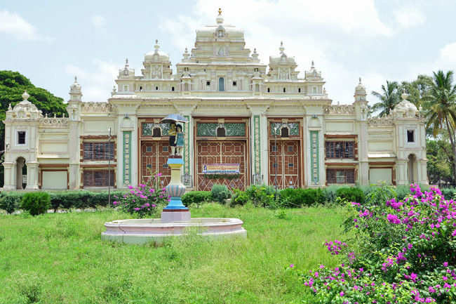

An incredibly breathtaking example of Indo - Saracenic style of architecture, the Mysore Palace is a magnificent edifice located in Mysore in the state of Karnataka. Also known as the Amba Vilas Palace, it is the former palace of the royal family of Mysore and is still their official residence. Referred to as the 'City of Palaces', Mysore houses seven other places, but none come close to awe - inspiring grandeur of this palace. Mysore Palace was built in the year 1912 for the 24th Ruler of the Wodeyar Dynasty and is counted amongst one of the biggest palaces in the country.


The Brindavan Gardens, a celebrated beauty spot in this part of India is world famous for its symmetric design. It is one of the most beautifully laid out terrace gardens in the world. The creation of this garden in the Krishnaraja Sagar Dam site has been the achievement of Sir Mirza Ismail, the then Dewan of the princely State of Mysore. The beautification of the whole dam complex was conceived by Sir Mirza Ismail. Modeled on the design of the Shalimar Gardens of Kashmir in the Mughal style, the garden is enriched with a number of terraces, parterres, fountains, running and cascading waterchannels, water chutes, lush green lawns, flower beds, shrubs and trees. Today, the Brindavan Gardens is world famous for its ethereal beauty, grandeur and illumination/ musical fountain.
The Chamundeshwari Temple is traditional Hindu temple located on the eastern edge of Mysore at the height of 1000ft on the Chamundi hills. Dedicated to and named after goddess Durga, the temple also has statues of Nandi and Mahishasura, the demon. Being one of the oldest temples in the palace city of Mysore, the temple is a must-visit attraction for the travellers. The Chamundeshwari Temple is considered as a Shakti Peetha and is one among the 18 Maha Shakti Peethas. The temple exhibits a divine aura and offers an exhilarating view of the Mysore city.


The Jaganmohan Palace was built during rule of Krishnaraja Wodeyar III in 1861, as an alternate retreat for the royal family. The Mysore Palace, which was the original home of the royal family, was burnt down in a fire and the construction of a new palace in its place was started in the year 1897. The Royal family lived in this palace till the construction of the new Amba Vilas Mysore Palace in 1912. The installation of Krishnaraja Wodeyar IV took place in a pavilion inside the Jaganmohan Palace in 1902. The early convocations of the Mysore University were also held in this palace. The first session of the Legislative Council of the Mysore state was held here in July 1907. The Legislative Council was then called as the Representative Council and was presided over by the Diwan.